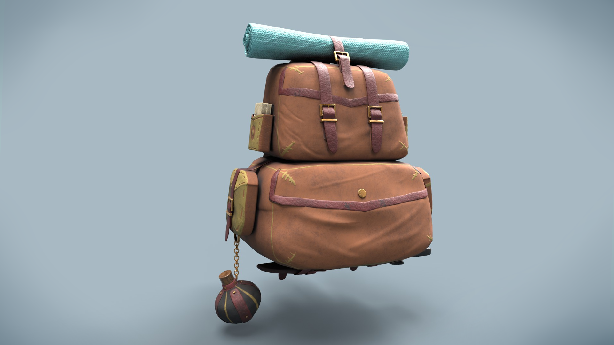
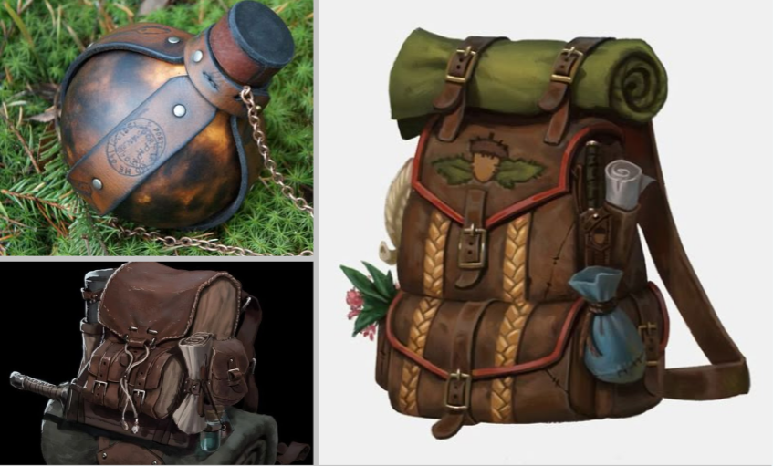

←
Bag

Сумка в стиле фэнтези, созданная в Blender и Substance Painter. Детализированная модель со складками и потертостями. Текстуры рисовались вручную с акцентом на реалистичность материалов.
В работе использовались: Blender (моделинг), Substance Painter (текстуры), Photoshop (постобработка).
Этапы работы

Референсы